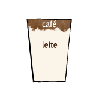
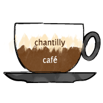

Café com leite
Trata-se do café filtrado com leite aquecido ou fervido. Também pode apresentar-se como café expresso com leite vaporizado e uma fina camada de espuma de leite.
Mocha
Drink que conta com uma calda de chocolate, leite vaporizado, espuma de leite e uma dose de expresso. A mistura pode ser tri-fásica ou uma mistura de café com a calda de chocolate com a crema do leite por cima. Pode também ser conhecido pelo nome de Mocaccino, termo utilizado e criado por uma rede de cafeterias internacional.
Cappuccino

O verdadeiro cappuccino apresenta 1/3 de expresso, 1/3 de leite vaporizado, 1/3 de espuma de leite na xícara de 150 a 180 ml. A espuma do cappuccino deve ser densa e cremosa, com temperatura de no máximo 60º para se tomar em goles. No Brasil, há o hábito de acrescentar canela ou chocolate.
Cappuccino Italiano
Compreende em: 1/3 de expresso; 1/3 de leite vaporizado e 1/3 de espuma de leite na xícara de 150 a 180 ml.
Pingado
Um copo de leite quente que recebe uma pequena quantidade de café, ou seja, somente um pingo de café. Bebida bastante popular em botecos e padarias do Brasil e é, geralmente, servido no copo americano.
Média

Tradicional nas padarias brasileiras, é conhecida lá fora como Latte ou Café Latte. Café expresso com leite vaporizado e uma fina camada de espuma. Sua textura deve ser um pouco menos cremosa que o cappuccino.
Café Cortado

É como chamam a Média (Café Latte ou Latte) no Rio Grande do Sul.
Macchiato

Geralmente é servido na xícara de expresso e consiste em um expresso “manchado” com a crema do leite. No Brasil, é conhecido também como “café com espuminha”. Muitos preferem tomar essa bebida, pois a crema do leite quebra um pouco o sabor intenso do expresso.
Café com Panna
Muito comum na Itália, este café conta com a Panna (creme de leite fresco batido ou feito na coqueteleira). Considerando que alguns estados brasileiros não permitem a comercialização de leite fresco, apenas pasteurizado, muitas cafeterias substituem a Panna por chantilly.
Café com Chantilly
Muito comum em todo o Brasil, compreende em uma dose de expresso coberto com chantilly.
Café Breve
Muito comum nos Estados Unidos, trata-se de uma dose de expresso com creme half–and–half (composto de metade leite, metade creme de leite). Infelizmente, este café não é comercializado no Brasil, pois este tipo especial de creme não é comercializado